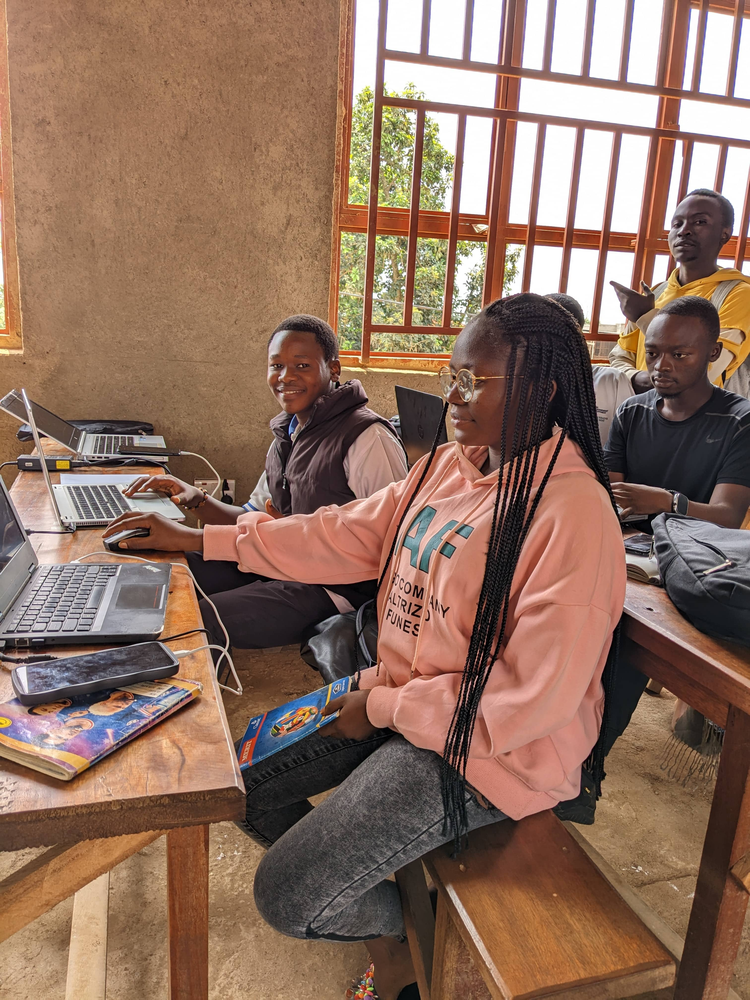

Le paradigme qui structure le monde du développement.
Préparez-vous à penser en "Objets".

Bac 1 - Fondamentaux POOLa Programmation Orientée Objet (POO) est un paradigme de programmation qui consiste à modéliser le monde réel sous forme d'"Objets". Contrairement à la programmation procédurale (où l'on écrit une liste d'instructions les unes après les autres), la POO permet de regrouper des données (appelées Attributs) et des comportements (appelés Méthodes) au sein d'une même entité. J'ai appris ce concept essentiel durant ma Licence 1 avec le langage Java.
Pour bien comprendre l'impact de la POO, comparons-la à la méthode procédurale que nous avions vue en début d'année :
| Aspect | Programmation Procédurale (C# basique) | Programmation Orientée Objet (Java) |
|---|---|---|
| Approche | Centrée sur les fonctions et les actions. | Centrée sur les données et les objets. |
| Structure | Le programme est une liste d'instructions séquentielles. | Le programme est un ensemble d'objets qui interagissent. |
| Réutilisabilité | Faible. Difficile de réutiliser du code sans le copier-coller. | Élevée Grâce à l'héritage et aux classes. |
| Gestion des erreurs | Plus complexe à maintenir quand le programme grandit. | Plus facile à maintenir grâce à l'encapsulation. |
Durant mon apprentissage, j'ai dû maîtriser les 4 concepts majeurs qui définissent la POO :
Voici un exemple de ce à quoi ressemble une classe en Java (le langage que nous avons utilisé pour la POO) :
public class Etudiant {
private String nom;
private int age;
public Etudiant(String nom, int age) {
this.nom = nom;
this.age = age;
}
public void afficherInfo() {
System.out.println("Nom: " + nom + ", Âge: " + age);
}
}
La POO a complètement changé ma manière de coder. Avant, j'écrivais des scripts qui s'exécutaient du début à la fin. Aujourd'hui, je conçois des systèmes. Comprendre la POO m'a permis de travailler sur des projets plus grands, de collaborer avec d'autres développeurs, et d'écrire du code beaucoup plus propre. C'est la base du développement logiciel moderne !